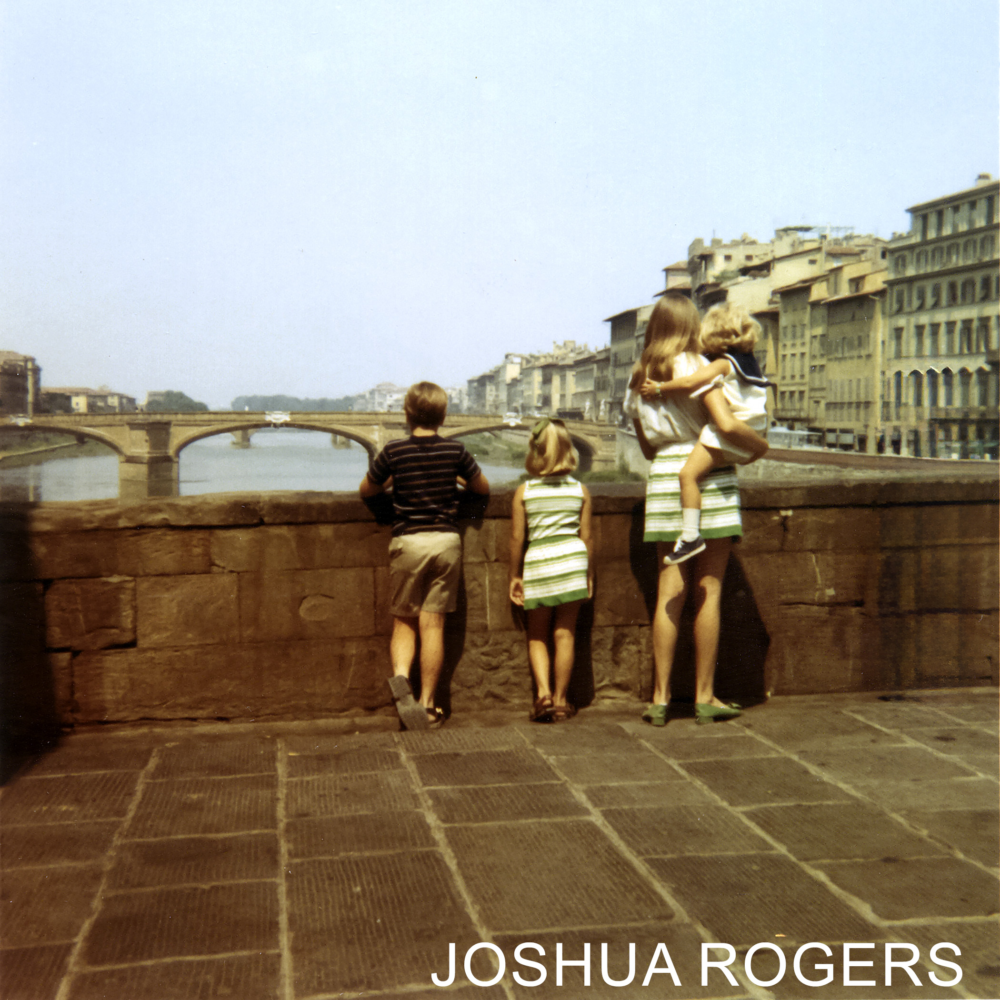

Joshua Rogers's Photoshop Experience
Photo Corrections
This section explains how to remove unwanted parts of an image and improve its overall appearance.
We began by using the crop tool to eliminate the white border and straighten the image, since the original was slightly tilted. Next, we applied the Curves adjustment to enhance brightness by selecting a proper white point. We also used the Levels adjustment to fine-tune the shadows, midtones, and highlights, which helped create better contrast and a more balanced range of light and dark areas. Once those edits were complete, the layers were merged into a single image using the flatten option.
After that, we used the spot healing brush to remove a blemish along the left side of the image where it had been folded. The original photo also included an extra person who needed to be removed. To fix this, we used the patch tool to replace that area and then refined it by creating a mask around the subject and blending the replacement more naturally. To make the edit look seamless, the clone stamp tool was used to copy nearby areas and fill in any inconsistencies.
